Journal
of Molecular Evolution
©
By Springer-Verlag - 1979
J.
Mol. Evol. 14, 167-183 (1979)
Completion of
the Viking Labeled Release Experiment on Mars
Gilbert V. Levin and
Patricia Ann Straat
Biospherics Incorporated,
4928 Wyaconda Road, Rockville, Maryland 20852, USA
Summary. The final Labeled Release
(LR) cycle on each Viking lander tested a surface sample that had been stored
for several months at approximately 10°C prior to the onset of the active
sequence. At each lander site, activity was strongly diminished. This thermal
sensitivity of the active agent on the surface of Mars is consistent with a
biological explanation of the LR experiment. At the end of one of these cycles,
the incubation mixture was heated to 50°C to release any radioactive gas
trapped in the sample matrix. The results suggest that more than one carbon
substrate is involved in the LR reaction on Mars.
The thermal data from the
stored samples, coupled with data from previous cycles, have formed the basis
for evaluation of the thermal decomposition of the Mars active agent. The slope
of the resulting Arrhenius plot has been used to test the fit of other flight
data and to calculate the activation energy for thermal decomposition of the
Mars agent. The results and their interpretation still leave unresolved the
question of whether the Mars LR data were generated by biological or chemical
activity.
Key words: Viking biology -
Extraterrestrial life detection - Labeled release experiment
Introduction
The
Viking Labeled Release (LR) life detection experiment on the surface of Mars
has now completed its activities. This communication reports, for the first
time, the flight data from the final two experimental cycles, one at each of
the two Mars landing sites.
The LR experiment monitors radioactive gas evolution following the addition of a radioactive nutrient containing 14C-labeled organic substrates to a sample of the Mars surface material (Levin and Straat, 1976a). A positive metabolic response is defined by evolution of radioactive gas from an ‘active’ sample, but little or no evolution from a duplicate sample preheated for 3 h at 160ºC (the regimen selected to destroy or inhibit any life forms present). Extensive testing of terrestrial soils has shown these criteria to be highly reliable.
The results (Klein et al, 1976; Levin and Straat, 1976b, 1977a, 1977b) obtained from such ‘active’ and ‘control’ cycles conducted on Mars during the Viking Mission did satisfy the life detection criteria established for the LR experiment. However, the hostile Martian environment with its improbable availability of liquid water, cold temperatures, and intense ultraviolet flux has led to a variety of speculations (Klein et al., 1976; Levin and Straat, 1976b, 1977a) that exotic chemical or physical reactions, instead of life, may have caused the LR positive responses on Mars.
Whether biological or chemical, the active agent is present at both landing sites, is destroyed by heating at 160°C for three h, and its activity is not dependent on direct ultraviolet irradiation (Klein et al., 1976; Levin and Straat, 1976b, 1977b).
Because of engineering constraints imposed on the lander sampling arms, the final two LR cycles reported herein were conducted on samples stored in the landers for several months at approximately 10°C. In each case, the LR response was strongly diminished. These thermal data, coupled with those from previous cycles, are consistent with a biological explanation for the active agent on the surface of Mars.
Results
Viking Lander 1, Cycle 4. The LR experiment planned for the fourth and final cycle at the Chryse landing site (VL-1) was injection of two nutrient ‘squirts’ onto a fresh Mars sample. Previous results (Levin and Straat, 1976b) suggested that only one of the seven 14C-labeled substrates was reacting with the Mars active agent and that this agent was inactivated or destroyed within seven sols (one Martian sol = 24 h and 40 min), as indicated by failure to produce a response upon addition of a second nutrient injection. (The kinetics of the second injection are the subject of an accompanying publication, Levin and Straat, 1979). The purpose of performing the double injection at the onset of Cycle 4 was to determine whether the 14C substrate or the Mars active agent was limiting the LR reaction. The time interval selected to space the two injections was three h, sufficient to establish the magnitude of the first response, but short enough so that the second injection would occur during the vigorous portion of the initial reaction while the agent was still active.
A fresh sample of the Mars surface material was to be obtained for this experiment, but the engineers of the Surface Sampler Team expressed considerable concern that the sample arm might be damaged. Hence, the Biology Team chose to utilize the sample still stored in the hopper rather than chance not getting a fresh sample. The stored sample had been collected on Sol 91 from the same ‘Sandy Flats’ area that had supplied the Sol 8 and Sol 36 acquisitions which produced positive responses in Cycles 1 and 3, respectively. Between Sol 91 and the onset of Cycle 4 on Sol 230, the hopper sample had been stored in the dark, open to the Martian atmosphere, at temperatures fluctuating between 10-26°C with an average of 10-15°C. Data from previous cycles suggested that the Mars active agent was stable to such storage for at least five sols (see later). The ambient Mars surface temperature fluctuated approximately between a high of -1ºC and a low of -78°C during the corresponding storage time (Kieffer, 1976).
The complete results for VL-1, Cycle 4 are presented in Fig. 1. An expansion of the injection period is shown in Fig. 2, and the overall response is compared to those from the other VL-1 cycles in Fig. 3. As shown, the response seen in Cycle 4 following first injection was small compared to that seen in active Cycles 1 and 3. Following second injection, no stimulation in the rate of gas evolution was observed other than an initial spike typically seen upon second injection in other cycles. Gas evolution then proceeded continuously at a low rate for the duration of the cycle.
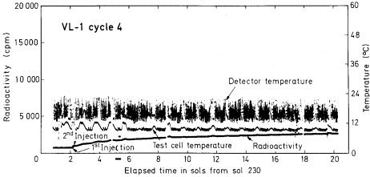
Fig. 1. Plot of LR data from fourth sample analysis on VL-1. An active sequence was used on a sample stored at 10-26°C for 141 Sols prior to nutrient injection. A second nutrient injection was performed three h after the first injection, as indicated. Radioactivity was measured at 16-min intervals throughout the cycle except for the first two h when readings were taken every 4 min. Radioactivity data include a background count of 730 cpm prior to the onset of the cycle. Detector and test cell temperatures were measured every 16 min.
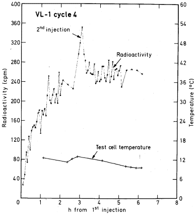
Fig. 2. Plot of LR data from fourth sample analysis on VL-1 showing expansion of data from the first 6 h after the initial nutrient injection. The time of the second injection is indicated. Radioactivity data have been corrected for a background count of 730 cpm prior to the onset of the cycle.
An estimate of the percent inhibition for Cycle 4 can be made by comparing the results with those obtained during comparable time intervals from VL-1, Cycle 1 and from VL-2, Cycle 1 (Table 1). These active cycles were conducted on fresh samples and the magnitudes of their responses span the range of active Mars responses. At 2-1/2 h following first injection, when all cycles had received only one injection, inhibition in the Cycle 4 response was between 89 and 93%. At 200 h, when all three cycles had received two injections, the Cycle 4 inhibition was between 80 and 87%.
The results indicate that storage of the Mars surface sample in the hopper for 136 sols prior to nutrient injection severely dissipated the active agent. Further, additional active agent was unavailable three h after first injection since the second injection did not produce a stimulation of gas evolution. This could be either because the amount of active agent which survived the lengthy storage was already functioning at the maximum rate (i.e., substrate saturation) or because it was largely destroyed, perhaps by water vapor, during the interim period following the first injection.
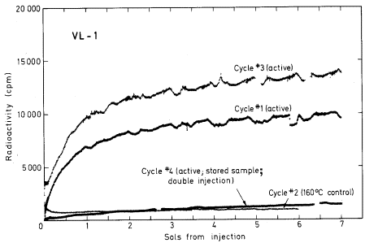
Fig. 3. Comparison of radioactivity evolved following the first injection of radioactive nutrient to each analysis cycle of VL-1. A fresh sample was used for the active sequences of cycles 1 and 3 whereas the sample used for active cycle 4 was stored for approximately 141 Sols at 10-26°C prior to use. For cycle 2, a stored portion of the same sample used for cycle 1 was heated for 3 h at 160°C prior to nutrient injection. All data have been corrected for background counts observed prior to nutrient injection.
Table 1. Percent Inhibition From Stored Samples
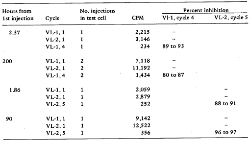
Viking Lander 2, Cycle 5. The fifth and final cycle planned at the Utopia landing site (VL-2) was an incubation of a fresh sample at sub-freezing temperatures, thereby better approximating ambient Martian temperatures. Since the instrument’s four test cells had already been used, the fifth cycle required addition of the fresh sample on top of a sample already used in an earlier cycle. Previous data acquired in the Test Standards Module (TSM), a laboratory instrument replicating the flight instruments in all essential components (Levin and Straat, 1976a), indicated that such a ‘soil-on-soil’ experiment detects metabolic responses, but that the changed soil/nutrient ratios could affect the kinetics of gas evolution.
This plan was interrupted when the sample arm failed to acquire the fresh sample. Nonetheless, scheduled power shutdown occurred and the biology instrument froze. When command capability was restored and the instrument warmed to 10-15°C to thaw the nutrient, the plan had to be revised to utilize a surface sample already present in a test cell. The sample selected had been acquired on Sol 145 from the same area (‘Beta’) which had given active responses in earlier cycles (Levin and Straat, 1976b), stored in the hopper for 32 sols, and then placed in an LR test cell for an additional 52 sols prior to the Cycle 5 nutrient injection. This 0.5 cc sample was located above 1.2 cc of surface material from a previous ‘dump’ of unused sample which was, in turn, on top of the 0.5 cc sample used for Cycle 1. (The Cycle 1 sample had been dried by heating 3 h at 160°C at the end of that test). Thus, the total sample volume was 2.2 cc contained within the 3.0 cc test cell. Nutrient budget calculations indicated that sufficient nutrient remained to assure only one nutrient injection for Cycle 5. Incubation temperatures were maintained above freezing, contrary to the original plan, because the stored sample had already been exposed to temperatures above freezing, thereby defeating the purpose of the cold incubation. Further, a second freeze might have placed undue stress on the biology instrument.
The results of Cycle 5 are given in Fig. 4. Upon injection of nutrient, radioactive gas was immediately evolved, reaching a maximum of approximately 350 cpm over background after 90 h. This level then remained essentially at a plateau until the end of the cycle at approximately 800 h. The gas evolution in Cycle 5 was significantly reduced relative to that from the other active cycles at VL-2 as Fig. 5 shows. As seen in Table 1, the percent inhibition was greater than 90% throughout the cycle. These data support those from VL-1, Cycle 4 (see above) that long term storage of the Mars sample in the dark at approximately 10°C (see below) destroys the active agent in the Mars sample.
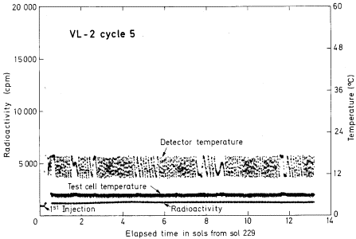
Fig. 4. Plot of LR data from fifth sample analysis on VL-2. An active sequence was used on a sample stored for 84 Sols at approximately 7°C prior to nutrient injection. This sample was placed in a used test cell containing the dried sample from the first VL-2 cycle plus sample ‘dumps,’ giving a total volume of 2.2 cc. Radioactivity was measured at 16-min intervals throughout the cycle except for the first 2 h when readings were taken every 4 min. Data between 2 and 4 h after injection were lost. Detector and test cell temperatures were measured every 16 min.
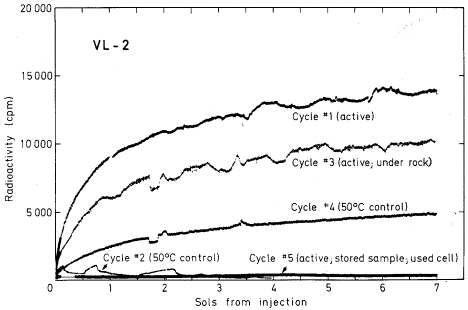
Fig. 5. Comparison of radioactivity evolved following the first injection of radioactive nutrient to each analysis cycle of VL-2. A fresh sample was used for each cycle except cycle 5 which used a sample stored approximately 84 Sols at 7°C prior to injection. The sample used in cycle 3 was obtained from under a rock. Cycles 1, 3, and 5 were active sequences, whereas cycles 2 and 4 were control sequences in which the samples were heated for 3 h at approximately 51.5°C and 46°C, respectively, prior to nutrient injection. Sample volumes were 0.5 cc except that for cycle 5 which contained 2.2 cc. All data have been corrected for background counts observed prior to injection.
Validity of Conclusions. The conclusion from VL-1, Cycle 4 and VL-2, Cycle 5 that long term dark storage at 10°C destroys the activity of the Mars sample assumes that both cycles received a full measure of soil and nutrient. Laboratory data obtained with the TSM indicate that the rates and kinetics of gas evolution for a positive response are influenced by the soil/nutrient ratio with the total gas evolved limited by the volume of nutrient. A properly functioning instrument delivers 0.5 cc soil +20% and 0.115 cc nutrient +8%. A partial nutrient delivery, which could occur toward the end of the nutrient supply, would result in changed kinetics and a reduced plateau level. Excess surface sample could diminish the rate of gas evolution, whereas failure to deliver a sample would produce a response characterized by that from nutrient alone in which a plateau of approximately 200-600 cpm is established within a few hours.
For both cycles, some question exists that a complete nutrient volume was in fact delivered because both instruments were low in the supply of nutrient. Each nutrient injection sequence requires 0.52 cc nutrient to deliver the 0.115 cc volume to the test cell. At the onset of VL-1, Cycle 4, a calculated 1.56 cc remained available, not including residual nutrient which would be left in the lines after utilizing all deliverable nutrient. This volume ensured a complete first injection and a high probability of a full second injection. However, the kinetics of gas evolution following second injection neither confirm nor deny that the second injection occurred. Typically, upon second injection, a spike is seen followed by a 30-35% drop in the total radioactive gas present such that the new level is below the plateau attained prior to second injection. In VL-1, Cycle 4, the spike occurs, followed by a 30-35% drop, but the new level is essentially the same as that seen prior to second injection. These kinetics could be explained either if there were no injection or if the injection occurred while sufficient gas was still being evolved to obliterate the drop in plateau level.
On VL-2, Cycle 5, only 0.64 cc nutrient was calculated to be available at the onset of the cycle. Further, prior to the injection, the instrument had accidentally frozen with nutrient in the lines. This may have ruptured the delivery lines or valves. Thus, the probability of a complete nutrient delivery for this cycle is considerably lower. However, at least a partial injection occurred because some radioactivity was evolved in the test cell following injection. Alternatively, this radioactivity could have resulted from residual gas present in the delivery lines which was injected into the test cell in lieu of nutrient.
The probability that sample delivery or sample size affected the results of these two cycles has also been considered. For VL-1, Cycle 4, calculations indicated that enough sample remained in the hopper to provide a full delivery. The observed kinetics are atypical of a result from nutrient alone and give evidence that a sample delivery did occur. For VL-2, Cycle 5, the large sample volume of 2.2 cc could have affected the rate of gas evolution. However, separate experiments conducted in the TSM that replicate the VL-2, Cycle 5 sequence have shown that the influence of the larger sample size on kinetics is highly soil dependent. With an iron-rich terrestrial soil, a stimulation was seen for the excess sample size, whereas with a synthetic Mars analog soil an inhibition was seen. Thus, the large sample in VL-2 cycles may have caused a reduction in gas evolution.
In summary, then, the conclusion that the low results in VL-1, Cycle 4 following first injection reflect inactivation of the stored sample appear valid. The results following second injection are probably also valid. The VL-2, Cycle 5 results tend to support the conclusion of inactivation on long-term storage although some concern exists that the low activity may reflect a low nutrient injection volume or the large sample size or both.
Stability
of the Active Mars Agent
Results from previous cycles (Levin and Straat, 1976b, 1977b) showed that heat treatment for 3 h at 46°C destroyed activity by approximately 54-80%, depending on whether the response is measured against VL-1, Cycle 1 or VL-1, Cycle 3, at the onset or at the end of the kinetic reactions. The final two Mars cycles, reported herein, extend the knowledge of the thermal properties by showing that long term exposure to even lower temperatures also significantly diminishes this activity. The thermal stability of the active agent, one of its key characteristics, is summarized below:
Destroyed by 3 h at 160°C. (Note that sample was stored 20 sols at approximately 10°C prior to 160°C treatment and another sol at 10°C after the 160°C treatment); VL-1, Cycle 2 (Levin and Straat, 1976b).
Partially destroyed (54-80%) by 3 h heat treatment at 46°C; VL-2, Cycle 4 (Levin and Straat, 1977b).
Mostly destroyed (80-93%) by storage for 141 sols at 10-26°C with an average exposure of approximately 15°C; VL-1, Cycle 4.
Destroyed by storage for 84 sols (or less) at -8ºC to +10°C with an average exposure of 7°C. (Note that sample underwent a ‘freeze-thaw’ cycle; conclusion also assumes full nutrient injection and no effect of sample size); VL-2, Cycle 5.
Stable to storage for 5 sols at 7 to 10°C. (Assumes that reduction in activity resulted from heat treatment for 3 h at 51°C rather than from prior 5 sol storage); VL-2, Cycle 2.
Stable (at least partially) to storage for 2 sols at 18°C. (Assumes stable to storage for 2 sols at 10°C, the regime preceding active VL-1, Cycle 1. Note, however, that since no sample was tested with a shorter storage time, stability at 10°C is an assumption); VL-1, Cycle 3.
In attempting to quantitate the thermal properties of the active agent, the actual temperature exposure of each sample must be estimated. Upon acquisition, each sample progresses through several stations, each with its own thermal regime. Samples were obtained from the top 3.5 cm of Mars surface material and transferred to the soil processor (PDA) via the collector head of the sample arm. Collector head temperatures were assumed to be those of the surrounding atmosphere. The total combined time in the collector head and PDA was generally less than 2 h. The sample was sieved as it passed from the PDA into the soil hopper (SDA) where it remained until it was distributed into the test cell. SDA temperatures were assumed to be identical to those of the Biology Instrument mounting plate which generally experienced a diurnal temperature range between 10° and 23°C. Temperatures in the test cell were maintained near 10°C with diurnal fluctuations ranging between 9° and 14°C. The estimated temperature exposure of each sample at each of these stations is presented in Table 2.
These time-temperature data may be used to generate an Arrhenius plot representing the temperature effect on the rate of decomposition of the Mars active agent. The overall assumptions required for this analysis are:
1. The thermal decomposition of the active agent follows first order kinetics such as is seen for the decomposition of hydrogen peroxide (see Discussion).
2. The active agent at Lander Site 1 is the same as that at Lander Site 2.
3. The LR reaction is limited by the active agent and a stoichiometric relationship exists between the moles of active agent and the moles of gas evolved. Thus, the moles active agent present in the reaction mixture at the time of nutrient injection can be calculated from the radioactivity evolved, assuming a one-carbon gas. Justification for the active agent as limiting is that commandable injection did not produce additional evolved radioactivity, as would be expected if the reaction were substrate limited. Also, a higher plateau would be expected if sufficient oxidant were present and able to oxidize all LR substrates.
4. VL-1, Cycle 1, VL-1, Cycle 3, VL-2, Cycle 1, and VL-2, Cycle 3 represent reactions with fully active agent which has not undergone decomposition prior to nutrient injection. Thus, storage, at approximately 10°C for 2-3 sols does not affect stability.
5. The initial concentration of the active agent is the same in all cycles and can be estimated from the plateau of the active cycles. (It should be noted that this necessary assumption may not be true, as indicated by the observed variation of the plateaus from active cycles. The magnitude of this error will affect the calculated percent loss in activity for each storage regime.)
6. Loss of the active agent is caused by decomposition and not vaporization.
Using these assumption, the rate constant, k, for first order decomposition can be calculated at any given temperature from the relationship:
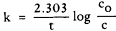
where t is the exposure time in hours at the particular temperature, cO is the initial concentration of active agent, and c is the concentration remaining after the time-temperature exposure. An Arrhenius plot can then be generated from log k versus 1/T where T is the exposure temperature in °K. From the slope of this line, the activation energy, DEa, for decomposition can be calculated:
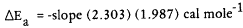
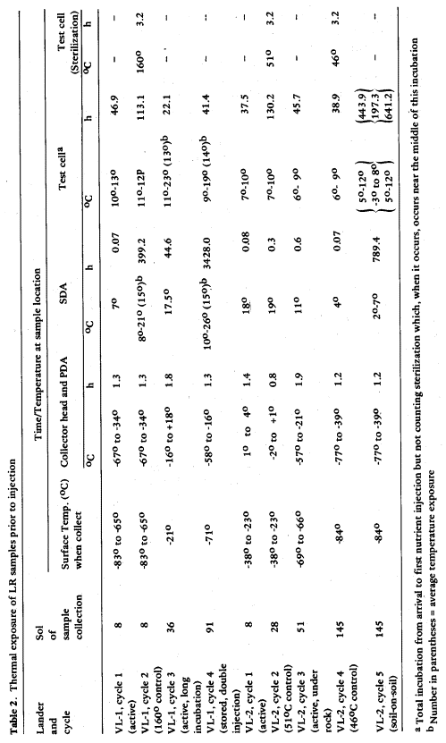
Table 3. Percent loss of LR activity following various time temperature treatments
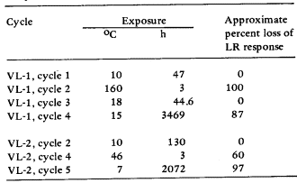
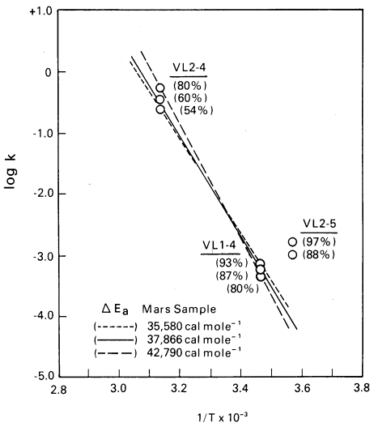
Fig. 6. Arrhenius plot of the LR flight data. The data presented in Table 3 for VL-1, Cycle 4 and VL-2, Cycle 4 have been used to generate an Arrhenius plot (---) of the rate of thermal decomposition (log k) of the Mars active agent as a function of reciprocal temperature in °K. Broken lines represent the maximum and minimum variation in slope that could be obtained for the inhibition range observed for each cycle. For each slope, as indicated, the activation energy (DEa) has been calculated. The data from VL-2, Cycle 5 are also plotted for comparison although not used to generate the lines. The assumptions inherent in the data treatment are described in the text.
The data available for this temperature analysis are presented in Table 3. For each indicated cycle, the percent loss in active agent is estimated as a function of the treatment time, in hours, at an average temperature estimated from Table 2. In using these data, it is noted that k cannot be calculated for cycles which show no decomposition (i.e., c = cO) or total decomposition (i.e., c = o). Thus, only those cycles that show intermediate decomposition (i.e., VL-2, Cycle 4; VL-1, Cycle 4; VL-2, Cycle 5) can be used to generate the Arrhenius plot. Of these three points, that from VL-2, Cycle 5 may not be valid since an injection may not have occurred and since the reaction contained excess soil which may have affected kinetics and the estimation of activity loss. Once an Arrhenius plot is generated from VL-2, Cycle 4 and VL-1, Cycle 4, k at any given temperature can be graphically determined and used to test the fit of flight data from the other cycles.
The Arrhenius plot derived from data from VL-2, Cycle 4 and VL-1, Cycle 4 is shown in Fig. 6. Dotted lines indicate the possible variation in slope according to variations in the percent activity loss estimated for VL-2, Cycle 4 and VL-1, Cycle 4 (54 to 80% and 80 to 93%, respectively). In estimating the validity of this plot, it should be noted that the data point derived from VL-2, Cycle 4 is perhaps the most reliable since little uncertainty exists for both the temperature and the time of exposure. The temperature estimate of VL-1, Cycle 4 is subject to more error since this sample underwent diurnal fluctuations over a long period of time. However, from the line as it is plotted, the following information may be derived:
1. Decomposition of the Mars active agent has an activation energy between 35,000 and 43,000 cal mole-1, well within the range of 15,000 to 60,000 cal mole-1 cited (Daniels and Alberty, 1955) for most chemical reactions.
2. The temperature required for a 99.9% reduction within 3 h of treatment is between 53° and 60°C. Thus, the 3 h of treatment at 160°C that occurred on VL-1, Cycle 2 would be expected to result in 100% decomposition. This deduction is consistent with data obtained from the mission. Also, the storage for 21 sols at 10°C prior to the 160°C treatment would have resulted in no more than an 8% activity loss.
3. Essentially no decomposition would be expected for the time-temperature regimes experienced prior to the onset of VL-1, Cycle 1 (2 sols at 10°C) or VL-1, Cycle 3 (2 sols at 18°C). Further, essentially no decomposition would be expected for the 5 sol storage of VL-2, Cycle 2 prior to cold sterilization. These predictions are also consistent with data obtained from Mars.
4. For VL-2, Cycle 5, a 10 - 20% decomposition is predicted. This is inconsistent with flight data which showed a 97% decomposition.
Thus, with the exception of VL-2, Cycle 5, the flight data are consistent with the Arrhenius plot generated from VL-2, Cycle 4 and VL-1, Cycle 4. The inconsistency of VL-2, Cycle 5 may support the hypotheses either that injection was faulty or that the large sample affected the kinetics of gas evolution. Alternatively, the inconsistency may reflect an incorrect assumption in the highly simplified data treatment. It should be noted that the activation energy calculated from VL-2, Cycle 4 and from VL-2, Cycle 5 is between 23,000 and 27,000 cal mole-1. However, when this value is used to test the fit of other flight data, predicted inhibitions in all cases are greater than observed on flight. This may be additional evidence that the data from VL-2, Cycle 5 may not be valid.
Other important information can be deduced concerning the Mars active agent. It is apparently stable to ultraviolet radiation as evidenced by its presence on or just below the exposed Mars surface. On the other hand, its stability does not depend on direct ultraviolet radiation since activity observed with a sample taken from under a rock (VL-2, Cycle 3) was essentially identical with that obtained from an exposed surface sample (Levin and Straat, 1976b).
Terminal
Heating of Cycle 4
A single nutrient injection into the LR test cell contains approximately 257,000 cpm with each of the 17 carbons of the seven substrates contributing approximately 15,000 cpm (corresponding to 29 nmoles of carbon). For the four cycles conducted with active surface samples (VL-1, Cycles 1 and 3; VL-2, Cycles 1 and 3), the maximum radioactivity evolved ranged from 11,000 to 16,000 cpm, possibly corresponding to total utilization of only one of the carbon substrates. This suggested (Klein et al., 1976) that a chemical reaction was occurring between formate, assumed to be the most reactive of the LR substrates, and some surface oxidant.
To test the possibility that more than one substrate may have been involved, the VL-1, Cycle 4 incubation mixture was heated to 50°C at the end of the cycle (Sol 287) to drive off any radioactive gas trapped within the sample matrix during the 55 Sol incubation period. From previous laboratory studies (Levin and Straat, 1976a), this mild treatment was known to have no effect on the decomposition or volatilization of residual nutrient substrates remaining within the sample. VL-2, Cycle 4 had demonstrated that heating to 50°C severely attenuated the active agent, so that the terminal 50°C heating of the reaction mixture would likely not produce new gaseous products. When planning this experiment, it was hoped that the active sample would produce a radioactive plateau of either 16,000 cpm (from one injection) or up to 32,000 cpm (from two injections assuming active agent at the time of the second injection). If the mild heat treatment would release additional gas trapped within the sample, to exceed the 16,000 or 32,000 cpm plateau, this would establish that more than one carbon substrate was involved in the LR reaction. As discussed above, however, the stored sample used for VL-1, Cycle 4 showed a reduced response and had evolved only 3000 cpm by the time of the 50°C terminal heating.
The results of the heat treatment are shown in Fig. 7. During heating, the detector heaters produce ‘noise’ such that the gas level cannot be determined. As soon as these heaters were turned off and accurate counts obtained, the radioactivity level was 20,954 cpm, approximately 18,000 cpm above the initial value for the gas present in the headspace prior to the heating. (It should be noted that this cannot reflect simply heat-driven movement of the gas from the headspace of the test cell into the detector chamber since the detectors are simultaneously heated to 110°C, considerable above the test cell 50°C). As the test cell cooled, the radioactive gas was quickly reabsorbed and the level dropped to 6600 cpm within the 2-1/2 h required for the test cell to return to 10°C. The gas level then gradually decreased at approximately a linear rate. By Sol 300, the level was 3800 cpm where it remained steady until data collection terminated on Sol 303.
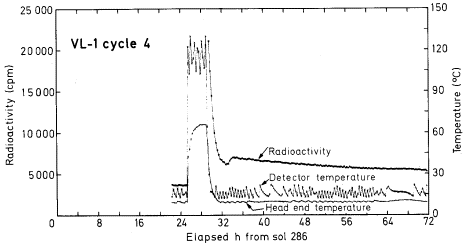
Fig. 7. Radioactivity released from terminal 50°C heating of the VL-1, Cycle 4 incubation mixture. The LR heaters were turned on 55 Sols after the onset of the reaction for a total of 3.74 h to provide the incubation mixture with approximately 3 h of heating at 50°C. During this time, the ‘noise’ produced by heating the detectors to approximately 110°C prevented monitoring the level of radioactivity in the LR test cell. Readings of radioactivity resumed immediately after turning off the heaters. Radioactivity and temperature readings were taken every 16 min.
Assuming the same phenomenon during previous active cycles, at least an additional 18,000 cpm would have been generated as gas and remained trapped in the sample-nutrient mixture. Thus, the 10,000-16,000 cpm level observed for active cycles may represent only a portion of the total gas evolved. Because each carbon position contributes approximately 15,000 cpm, the gas evolved may have been derived from at least two carbon positions. This could be accomplished by oxidation of one substrate composed of two carbons, or of two substrates, assuming one is formate. Alternatively, the gas could also be generated by partial oxidation of several or all substrates. However, the latter alternative is less likely in view of the apparent first order type kinetics observed (Levin and Straat, 1979) for the Mars LR active response.
Discussion
The data obtained from the final two cycles of the Viking LR experiment on Mars have further delineated the thermal sensitivity of the active agent responsible for the positive LR responses reported from earlier cycles. These data are consistent with a biological explanation since Mars organisms would be expected to be sensitive to temperatures significantly above that of their native habitats. The long-term storage temperatures of approximately 10°C are considerably above the -21°C to -84°C temperatures at which the samples were collected (Table 2). Since few chemicals would be destroyed or dissipated by such a low temperature, these data make biology an attractive possibility.
Alternate explanations which invoke a chemical agent must account for the marked thermal sensitivity. Several exotic chemicals have been proposed that might form on the surface of Mars as a result of ultraviolet radiation in the presence of trace amounts of water vapor. Among the candidates are various metal peroxides, superoxides, or ozonides. Most of these compounds, however, cannot account for the thermal properties of the active agent (Vol’nov, 1966).
Of these compounds, hydrogen peroxide seems the leading candidate and was early proposed (Oro, 1976b) to account for the LR reaction on Mars. The LR reaction appeared to be first order, seemingly involving only one substrate, and a reaction between formate and hydrogen peroxide was put forth as the source of the LR response.
The properties of hydrogen peroxide have been extensively summarized (Edwards, 1962; Schumb et al., 1955). At 760 mm Hg, anhydrous hydrogen peroxide melts at -1.7°C and boils at 152°C. Pressure has a significant effect and, at 30 mm Hg, the boiling point is depressed to approximately 72°C. At 6 mm Hg, the approximate pressure at which all Mars samples were stored and the pressure at which heat treatments were begun, a further depression of the boiling point to 41°C can be calculated.
The production of H2O2 in the Martian atmosphere and its freezing out on the surface of the planet have been postulated (Parkinson and Hunten, 1972; McElroy et al., 1977) in a hypothetical model of the aeronomy of the lower atmosphere of the planet. Hydrogen peroxide frozen in the surface sample, when warmed to the incubation temperature of the LR experiment, could react with the LR medium evolving radioactive gas. However, a problem remaining to be solved concerns the ability of the hydrogen peroxide formed on Mars to survive. The oxidant is highly susceptible to photolysis by ultraviolet light which, on Mars, penetrates to the surface virtually unattenuated by any ozone layer. The rate coefficients cited (Parkinson and Hunten, 1972; McElroy et al., 1977) for the formulation and destruction of hydrogen peroxide on Mars favor its destruction by a factor exceeding 107. Moreover, freezing would not protect the compound from photolysis (Edwards, personal communication). Some form of protection or complexing would be required to preserve the compound or to form a UV stable, but thermolabile precursor.
Hydrogen peroxide decomposition is known to be first order (Harned, 1918). When hydrogen peroxide activation energies are measured under conditions such that only decomposition can account for its disappearance, values of approximately 48,000 cal mole-1 (Edwards, 1962) are obtained. Thus, were hydrogen peroxide the active agent, the decomposition activation energies expected from the Mars samples would likely have been higher than the observed 37,000 to 42,000 cal mole-1. On the other hand, should some of the active agent escape through evaporation, the apparent activation energy would be lowered. In the LR experiments, both decomposition and vaporization were likely involved with vaporization playing a relatively more significant role at lower temperatures. In the long term storage experiments at approximately 10°C, the Mars samples were open to the Mars atmosphere. The various heat treatments were performed in closed test cells, but the test cells were vented to the atmosphere for four min after the heating cycle. Each arrangement would probably allow a significant quantity of hydrogen peroxide vapor to escape from the reaction volume. The differences in activation energies, then, are in the correct direction and the similarity of the known hydrogen peroxide decomposition activation energy to that derived from the flight data is of considerable interest. However, another aspect of the Arrhenius plot remains to be considered. A nonstabilized 90% wt. hydrogen peroxide solution decomposes at the rate of about 0.001% per h at 50°C (Edwards, 1962; Schumb et al., 1955). Thus, although the slope of the Arrhenius plot for hydrogen peroxide decomposition may parallel the flight data, the ‘y’ intercepts of the two sets of data are considerably apart. In order for hydrogen peroxide to fit the flight data, its decomposition in the Mars sample would have to be catalyzed to effect a significant lowering of the temperature at which it decomposed.
The Mars surface material with its constituent metals could provide such a catalyst. To fit the necessary requirements, the particular catalyst would have to account for a postulated free radical chain length of about 109 in order to reconcile the frequency factor (A) calculated from the flight data with the normal frequency factor for the decomposition of peroxides (log Aflight - log Anormal = 23 - 14 = 9) (Edwards, 1978 personal communication). The catalyst would also have to possess the property of effecting the slow decomposition of the hydrogen peroxide under anhydrous conditions at 10°C while not precluding a continuing reaction over many hours between the peroxide and the LR labeled substrates when nutrient was added into the test cell at 10°C.
Although the data cannot at present be entirely accounted for by chemical hypotheses, they remain consistent with biological explanations. However, biological approaches to resolving the LR enigma are not possible short of another Mars mission. Hence, our laboratory efforts are directed toward chemical experiments which can reduce the area of ambiguity, ideally achieving general acceptance of biology or chemistry as the source of the LR reaction.
Such chemical work in progress in our laboratory has, so far, not replicated the kinetic and thermal data obtained from Mars. Chemical or physical models tested include ultraviolet and gamma irradiation (Levin and Straat, 1977a) and calcium peroxide and superoxide additions (Levin and Straat, 1979) to ‘Mars analog soils.’ Experiments with hydrogen peroxide in the laboratory and in the TSM under Mars conditions are in progress. Additional experiments are under consideration to effect the formation of hydrogen peroxide under Mars conditions, in the event some complexing will occur with ‘Mars analog soil.’ Perhaps such a complex could achieve the characteristics necessary to duplicate the LR Mars data.
Acknowledgments. The authors wish to thank Donald G. Shaheen and Dr. John Edwards for suggestions and helpful discussions. The excellent technical assistance of Cynthia Ann Waldman in reduction of flight data and of Jon Calomiris in performing TSM experiments is gratefully acknowledged. This work was supported by NASA Contract Nos. NAS1-9690 and NASW-3162.
References
Daniels, F., Alberty, R.A. (1955). Physical Chemistry. New York: Wiley
Edwards, J.O., ed. (1962). Peroxide Reaction Mechanisms. New York: Wiley
Harned, H.S. (1918). J. Amer. Chem. Soc. 40, 1461-1481
Kieffer, H.H. (1976). Science 194, 1344-1346
Klein, H.P., Horowitz, N.H., Levin, G.V., Oyama, V.I., Lederberg, J., Rich, A., Hubbard, J.S., Hobby, G.L., Straat, P.A., Berdahl, B.J., Carle, G.C., Brown, F.S., Johnson, R.D. (1976). Science 194, 99-105
Levin, G.V., Straat, P.A. (1976a). Origins of Life 7, 293-311
Levin, G.V., Straat, P.A. (1976b). Science 194, 1322-1329
Levin, G.V., Straat, P.A. (1977a). Biosystems 9, 165-174
Levin, G.V., Straat, P.A. (1977b). J. Geophys. Res. 82, 4663-4667
Levin, G.V., Straat, P.A. (1979). J. Mol. Evol. 14, 185-197
McElroy, M.B., Kong, T.Y., Yung, Y.L. (1977). The Aeronomy of Mars and Implications for Atmospheric Evolution. Cambridge: Harvard University
Oro, J. (1976). In: Levin, G.V., Straat, P.A. (1976b) Science 194, 1322-1329
Parkinson, T.D., Hunten, DM. (1972). J. Atms. Sciences 29, 1380-1390
Schumb, W.C., Satterfield, C.N., Wentworth, R.L. (1955). Hydrogen Peroxide. ACS Monograph Series. New York: Reinhold
Vol’nov, I.I. (1966). Peroxides, Superoxides, and Ozonides of Alkali and Alkaline Earth Metals. New York: Plenum
Received December 12, 1978; Revised April
25, 1979